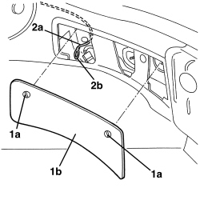
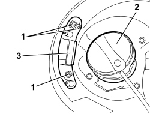
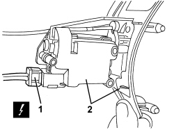
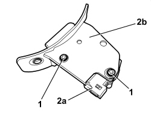
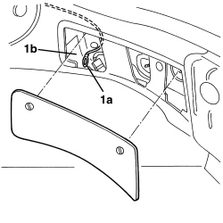
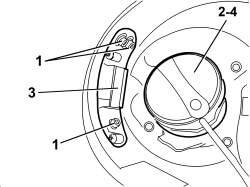
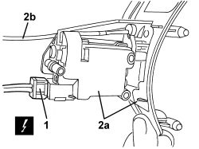
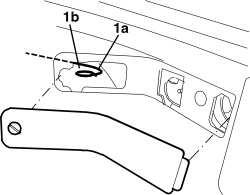

7025C40 FUEL FILLER FLAP CONTROL MOTOR - R+R AND CHECK LOCK SUPPLY LINE
- Path
- Procedures > 70 FITTINGS > 7025 COMPARTMENT COVERS > 7025C VARIOUS FLAPS (EXTERIOR) > 7025C40 FUEL FILLER FLAP CONTROL MOTOR - R+R AND CHECK LOCK SUPPLY LINE
- Kind
- repair procedure (removal / refitting; the operation number is the code)
- Applies to
- all engines; all production periods
- Interactive page
- https://sloeber94.github.io/elrnDB-aBrrSpdr/en/#/946002574
Applies to: all engines; all production periods
 Removing
Removing
 Refitting
Refitting- Open the tailgate.
1. Release the retainers (1a) and remove the right rear light cluster access cover (1b).
2. Extract the fuel filler emergency opening control cord (2a).
Fit a sensor in the end (2b) of the cord (to be used for reinserting the cord during the refitting stage).

Applies to: all engines; all production periods
- Open the fuel filler cap access flap.
1. Undo the motor fixing bolts.
2. Undo the fuel filler.
3. Gently extract the motor support.
- Retighten the fuel filler cap.

Applies to: all engines; all production periods
1. Disconnect the electrical connection.
Description | Component |
|---|---|
FUEL FLAP LOCK GEARED MOTOR |
2. Keep the motor and support (2a) and extract the emergency control cord (2b) leaving the sensor in its place.

Applies to: all engines; all production periods
1. Undo the bolts.
2. Separate the motor (2a) from the support (2b).

Applies to: all engines; all production periods
Refitting
Removing- Check that the motor is not damaged.
- Position the motor on the support and tighten the bolts.
- Connect the electrical connection.
1. Using the sensor, place the cord (1a) in the right rear light cluster access compartment (1b).

Applies to: all engines; all production periods
- Undo the fuel filler cap.
- Place the motor and support in position.
- Retighten the fuel filler cap.
- Tighten the bolts fixing the motor and support.
- Close the fuel filler cap access flap.
- Working from the luggage compartment, check that the cord is working.
- Place the right rear light cluster access cover in position and secure it using the retainers.
- Close the tailgate.
Applies to: engines: 2.2 JTS, 3.2 JTS; all production periods; only with equipment: Spider
Removing
Refitting- Open the boot lid.
1. Rotate and release retainer (1a), then remove right rear light cluster access cover (1b) by removing retainer (1c).
2. Extract fuel filler emergency opening control cord (2a). Fit a sensor in the end (2b) of the cord (to be used for reinserting the cord during the refitting stage).

Applies to: engines: 2.2 JTS, 3.2 JTS; all production periods; only with equipment: Spider
- Open the fuel filler cap access flap.
1. Undo the motor fixing bolts.
2. Undo the fuel filler cap.
3. Gently extract the motor mount.
4. Retighten the fuel filler cap.

Applies to: engines: 2.2 JTS, 3.2 JTS; all production periods; only with equipment: Spider
1. Detach the electrical connection.
Description | Component |
|---|---|
FUEL FLAP LOCK GEARED MOTOR |
2. Keep motor and mount (2a) and extract emergency control cord (2b), leaving the sensor in its place.

Applies to: engines: 2.2 JTS, 3.2 JTS; all production periods; only with equipment: Spider
1. Undo the bolts.
2. Separate motor (2a) from mount (2b).

Applies to: engines: 2.2 JTS, 3.2 JTS; all production periods; only with equipment: Spider
Refitting
Removing- Check that the motor is not damaged.
- Position the motor on the mount and tighten the bolts.
- Attach the electrical connection.
1. Using the sensor, place cord (1a) in right rear light cluster access opening (1b).

Applies to: engines: 2.2 JTS, 3.2 JTS; all production periods; only with equipment: Spider
- Undo the fuel filler cap.
- Place the motor and mount in position.
- Retighten the fuel filler cap.
- Tighten the bolts fixing the motor and mount.
- Close the fuel filler cap access flap.
- Working from the luggage compartment, check that the cord is working.
- Position the right rear light cluster access cover and secure it using the retainers.
- Close the boot lid.